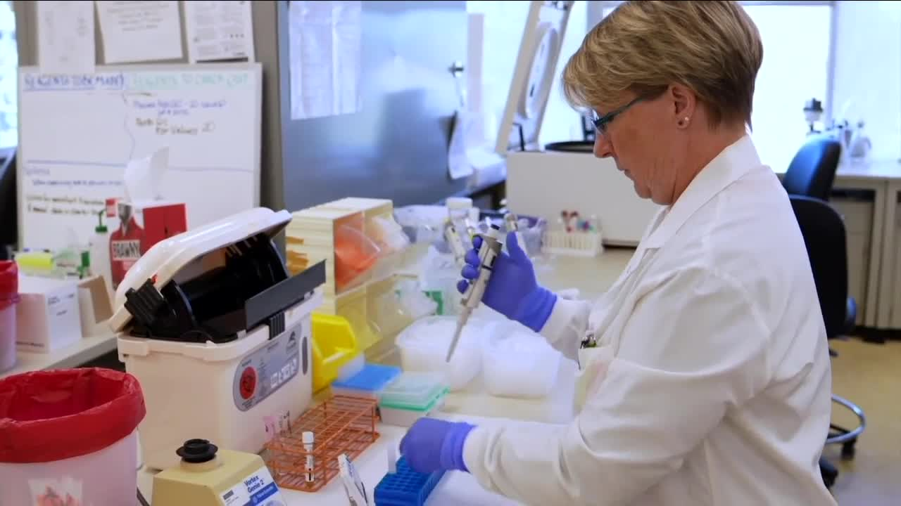

How accurate are COVID-19 antibody tests?Local scientist helps validate UCHealth test
-->
Sorry, we're having issues playing this video.In the meantime, try watching one of the videos below.
Play Video
Play
Unmute
Current Time 0:00
/
Duration Time 0:00
Loaded: 0%
Progress: 0%
Stream TypeLIVE
Remaining Time -0:00
Playback Rate
1
Chapters
Descriptions
Subtitles
Captions
Audio Track
Fullscreen
This is a modal window.
No compatible source was found for this media.
Caption Settings Dialog
Beginning of dialog window.Escape will cancel and close the window.
TextColorWhiteBlackRedGreenBlueYellowMagentaCyanTransparencyOpaqueSemi-TransparentBackgroundColorBlackWhiteRedGreenBlueYellowMagentaCyanTransparencyOpaqueSemi-TransparentTransparentWindowColorBlackWhiteRedGreenBlueYellowMagentaCyanTransparencyTransparentSemi-TransparentOpaque
Font Size50%75%100%125%150%175%200%300%400%
Text Edge StyleNoneRaisedDepressedUniformDropshadow
Font FamilyProportional Sans-SerifMonospace Sans-SerifProportional SerifMonospace SerifCasualScriptSmall Caps
DefaultsDone
Advertisement
x
There are dozens of antibody tests promising to tell you if you've had coronavirus, but as it turns out, the CDC says they might be wrong up to half the time.So which one should you get, or should you get one at all?Contact7 Investigator Jennifer Kovaleski reports.
AURORA, Colo.— There are dozens of COVID-19 antibody tests promising to tell people if they have had coronavirus, but are they accurate?
The CDC recently released a report, which found these tests might be wrong up to half the time, but UCHealth has created its own antibody test that it says is far more accurate than the early antibody tests, and a local scientist who had the virus helped validate the test.
'I was really struggling to breathe,' said Kelly Michels, the UCHealth scientist who tested positive for the virus.'And at about 10:30 that night I got my son and said we need to go.'
She took cellphone video from inside the COVID-19 unit at University of Colorado hospital in Aurora.
'I was on oxygen for five of the six days that I was there,' Michels said.'I can't convey how sick I felt.'
After a grueling month of battling COVID-19, Michels went back to work at a testing laboratory at UCHealth where she quickly found herself validating a COVID-19 antibody test.
'The only thing I can say is irony, really, I'm the only person in the laboratory who has the illness and I come right back, and I have to validate the antibody test,' she said.
And the real irony was they used her own blood to do it.
'Here I am put in this position by a pandemic to help out my laboratory, not only with my blood but with my expertise and years of experience,' she said.
How accurate are antibody tests?
When asked about the confusion about antibody tests and whether they are accurate, Michels said, 'There are a lot of antibody tests that are available and not all of them are very good.'
'There is a lot of conversation about the accuracy of antibody tests,' Dr.Richard Zane an emergency room doctor at UCHealth.
Zane said many of the early antibody tests weren't specific or sensitive enough for COVID-19.
'In actual fact, most of the tests that were on the market had a higher probability of giving you a false positive than a true positive,' he said.
Zane said it was likely detecting other types of coronavirus antibodies, and not actually COVID-19.
He recommended people look for antibody tests that are authorized by the FDA and highly specific.
'The test that we have developed and are offering is highly specific meaning that the error rate is less than 1 in 1000 and the specificity is greater than 98%,' Zane said.
The gold standard in the testing world is around 95% and while the CDC warns antibody tests are only 50% accurate and Gov.Jared Polis has weighed in with concerns.
'They're accuracy rate continues to be a question mark, and even more importantly we don't know exactly what those antibodies mean in terms of your increased resistance,' Polis said.
Zane believes the accuracy of antibody tests has started to improve and will help better determine infection rates throughout communities.
'I think that these tests are going to become more accurate as the public becomes more informed on how to interpret the characteristics of a test,' he said.'You should never be taking a test that is not at least 98 percent specific.'
However, he said a positive test doesn't mean a person is in the clear or immune to COVID-19.
'A positive antibody just means that you've been exposed to COVID-19 and you should not change your behavior or physical distancing,' Zane said.
Michels hopes the antibody tests means there is some immunity.
'But at this point we don't know, they haven't determined, scientists haven't determined whether there is an immunity to this virus or not,' she said.
UCHealth is offering its antibody to the public.Any UCHealth provider can order the tests for their patients or a patient can select to schedule the tests through My Health Connection.The hospital is charging $100 for the COVID-19 antibody test and $85 for the nasal swab.
Posted On: 2020-06-02T20:31:00
Posted By: Jennifer Kovaleski

Content Date: 2020-06-02
Download Date: 2021-04-08
Document ID: L0C049OAR